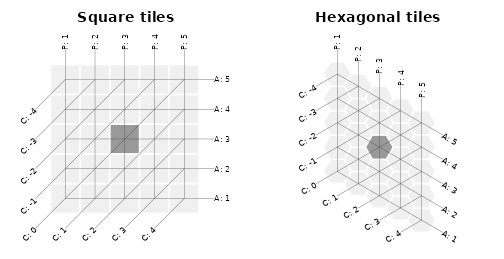
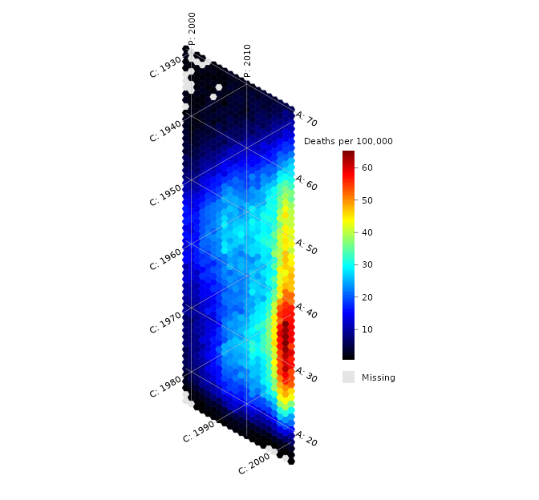
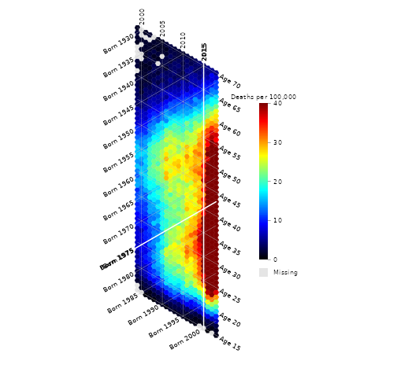
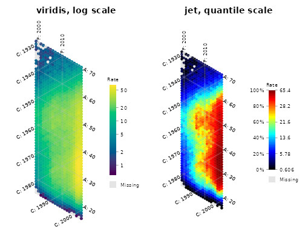
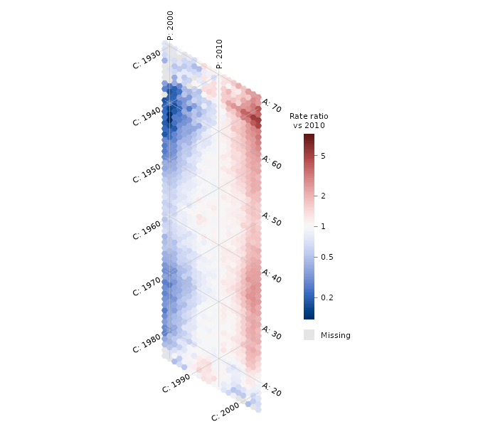
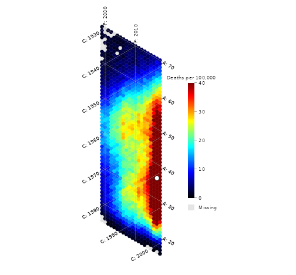
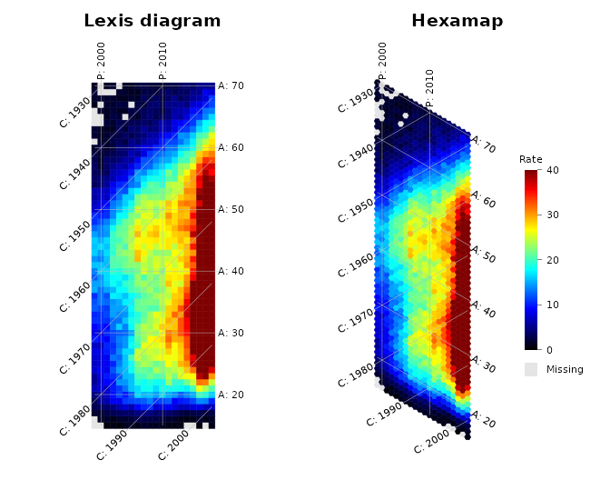
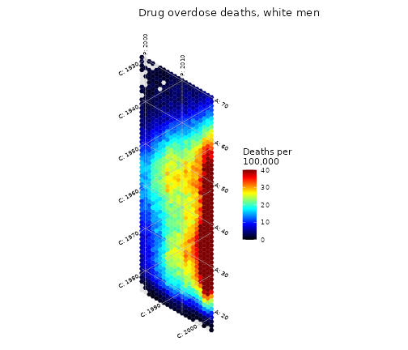

A hexamap is a heatmap of age-period-cohort (APC) data drawn with
hexagonal tiles, one per age-period cell. This vignette shows how to
prepare the data, draw a hexamap, and adjust it. The
vignette("apc-patterns") vignette shows how age, period and
cohort effects look on a hexamap, and vignette("overdose")
works through the example of Jalal and Burke (2020).
Why hexagons
In a traditional Lexis diagram, periods run along the x axis and ages
along the y axis, so cohorts (birth years, period - age)
run along the diagonal. Relative to age and period, the square grid
compresses the distance between adjacent cohorts by about 30%
(),
stretches the distance between cells of the same cohort by about 41%
(),
and makes adjacent cells of a cohort touch only at a corner.
On a hexagonal grid, the three APC axes are at equal 60° angles and neighboring cells share a full edge along each of them. The grey tiles below show one cell and its isolines on each grid.
mesh <- matrix(1, nrow = 5, ncol = 5, dimnames = list(1:5, 1:5))
mesh[3, 3] <- 2
par(mfrow = c(1, 2))
lexis_map(mesh, color_map = c("grey94", "grey60"), hex_border = "white",
hex_border_width = 2, isoline_interval = 1, legend = FALSE,
line_color = "grey30", title_text = "Square tiles")
hexamap(mesh, color_map = c("grey94", "grey60"), hex_border = "white",
hex_border_width = 2, isoline_interval = 1, legend = FALSE,
line_color = "grey30", title_text = "Hexagonal tiles")
Each tile is centered at
for age
and period
,
so neighboring tiles are one age or period group apart along every axis.
apc_to_xy() returns these coordinates.
The data
hexamap() takes a numeric matrix with ages as
rows and periods as columns, as produced by the NCI APC web
tool or SEER*Stat. Age and period groups must have the same width (for
example single years, or 5-year groups with 5-year periods). If the
matrix has numeric row and column names, the first age, first period and
group width are taken from them:
dim(overdose_white_men)
#> [1] 56 20
overdose_white_men[1:4, 1:5]
#> 1999 2000 2001 2002 2003
#> 15 NA NA 0.6061686 0.8496904 0.659595
#> 16 NA 1.483858 1.8573740 1.1391461 1.922624
#> 17 1.694595 1.874191 2.4999390 3.0236521 3.210340
#> 18 3.078342 3.463389 3.9953749 4.6949205 6.042849Otherwise, give them with first_age,
first_period and interval.
Data in long format, with one row per age and period, can be
converted with as_apc_matrix(). Missing combinations become
NA:
long <- expand.grid(age = seq(20, 80, by = 10), period = seq(1980, 2020, by = 10))
long$rate <- with(long, exp(age / 25) * (1 + (period - 1980) / 40))
rates_10y <- as_apc_matrix(long, value = "rate")
rates_10y
#> 1980 1990 2000 2010 2020
#> 20 2.225541 2.781926 3.338311 3.894697 4.451082
#> 30 3.320117 4.150146 4.980175 5.810205 6.640234
#> 40 4.953032 6.191291 7.429549 8.667807 9.906065
#> 50 7.389056 9.236320 11.083584 12.930848 14.778112
#> 60 11.023176 13.778970 16.534765 19.290559 22.046353
#> 70 16.444647 20.555808 24.666970 28.778132 32.889294
#> 80 24.532530 30.665663 36.798795 42.931928 49.065060and apc_rates() computes rates from matrices of counts
and population.
A first hexamap
hexamap(overdose_white_men, scale_units = "Deaths per 100,000")
Isolines are drawn every 10 years here: by default,
hexamap() picks a round spacing that gives at most 8
isolines, starting at the first round age and period. The labels
A:, P: and C: mark the age,
period and cohort isolines.
Isolines and labels
-
isoline_interval,first_age_isolineandfirst_period_isolineset where isolines are drawn; cohort isolines pass through the crossings of the age and period isolines. -
isolineschooses which isolines to draw. -
labelschanges the label prefixes. -
highlightdraws chosen ages, periods or cohorts as highlighted lines.
hexamap(overdose_white_men,
isoline_interval = 5,
labels = c(age = "Age ", period = "", cohort = "Born "),
highlight = list(cohort = 1975, period = 2015, col = "white", lwd = 2),
colorbar_range = c(0, 40),
scale_units = "Deaths per 100,000")
By default, cohort labels wrap around the bottom of the hexamap. With
wrap_cohort_labels = FALSE, all cohort isolines start on
the left edge.
Colors
palette takes "jet" (the default, as in the
paper) or any palette from grDevices::hcl.pals(), such as
the perceptually uniform "viridis"; color_map
takes any vector of colors. colorbar_range fixes the
limits; values outside them get the end colors.
colorbar_scale maps values to colors on a
"linear", "log" or "quantile"
scale. On the quantile scale each color covers the same share of cells,
which brings out patterns in skewed data; the colorbar then shows
percentiles on the left.
par(mfrow = c(1, 2))
hexamap(overdose_white_men, palette = "viridis", colorbar_scale = "log",
title_text = "viridis, log scale")
hexamap(overdose_white_men, colorbar_scale = "quantile",
title_text = "jet, quantile scale")
For ratios or differences, midpoint gives a diverging
scale centered on a value, with limits symmetric around it. Here, each
age’s rate is divided by its rate in 2010:
ratio <- overdose_white_men / overdose_white_men[, "2010"]
hexamap(ratio, colorbar_scale = "log", midpoint = 1,
scale_units = "Rate ratio\nvs 2010")
Missing cells
Cells with NA are drawn in na_color (light
grey by default), with a key below the colorbar labeled
na_label. In overdose_white_men, cells with 9
or fewer deaths are missing because CDC WONDER does not allow publishing
them. Use na_color = NA to leave missing cells blank.
Layouts and annotations
hexamap() returns, invisibly, the layout it drew.
hexamap_layout() computes the same object without drawing
it. The layout holds one row per cell, with its age, period, cohort,
value, coordinates and color, along with the isolines and the color
scale:
lay <- hexamap_layout(overdose_white_men, colorbar_range = c(0, 40))
lay
#> <hexamap_layout> (hexagon tiles)
#> Ages: 15-70 Periods: 1999-2018 Cohorts: 1929-2003
#> Interval: 1
#> Cells: 1120 (1100 drawn, 20 missing)
#> Scale: linear, 0 to 40, 100 colors
head(lay$cells)
#> age period cohort value x y color fraction
#> 1 15 1999 1984 NA 1731.185 -984.5 <NA> NA
#> 2 16 1999 1983 NA 1731.185 -983.5 <NA> NA
#> 3 17 1999 1982 1.694595 1731.185 -982.5 #00002E 0.04236488
#> 4 18 1999 1981 3.078342 1731.185 -981.5 #000050 0.07695855
#> 5 19 1999 1980 3.073404 1731.185 -980.5 #000050 0.07683509
#> 6 20 1999 1979 4.704179 1731.185 -979.5 #00007F 0.11760448Draw a layout with plot(), and add annotations at any
age and period with apc_to_xy():
plot(lay, scale_units = "Deaths per 100,000")
peak <- lay$cells[which.max(lay$cells$value), ]
points(apc_to_xy(peak$age, peak$period), pch = 21, bg = "white", cex = 1.5)
peak[, c("age", "period", "cohort", "value")]
#> age period cohort value
#> 1030 36 2017 1981 65.39119Lexis diagrams
lexis_map() draws the same data on square tiles with the
same options, which makes side-by-side comparisons easy:
par(mfrow = c(1, 2))
lexis_map(overdose_white_men, colorbar_range = c(0, 40), legend = FALSE,
title_text = "Lexis diagram")
hexamap(overdose_white_men, colorbar_range = c(0, 40), title_text = "Hexamap")
ggplot2
gg_hexamap() returns a ggplot object, and
autoplot() draws a layout. A named list of matrices gives
one panel per element, with a shared color scale:
library(ggplot2)
gg_hexamap(overdose_white_men, colorbar_range = c(0, 40),
scale_units = "Deaths per\n100,000") +
labs(title = "Drug overdose deaths, white men")
Saving figures
Hexamaps are taller than wide when there are more ages than periods,
as in most mortality and incidence data. The plot keeps a 1:1 aspect
ratio and fits the device, so choose the device size to match, for
example
png("hexamap.png", width = 5, height = 6.5, units = "in", res = 300).
Code from the paper
The eAppendix of Jalal and Burke (2020) called
create_hexamap(). That function is kept, with its argument
names, so the published code runs unchanged:
create_hexamap(data = data, first_age = 15, first_period = 1999, interval = 1,
first_age_isoline = 20, first_period_isoline = 2000,
isoline_interval = 10, color_scale = c(0, 40))Reference
Jalal H, Burke DS. Hexamaps for age-period-cohort data visualization and implementation in R. Epidemiology. 2020;31(6):e47-e49. https://doi.org/10.1097/EDE.0000000000001236